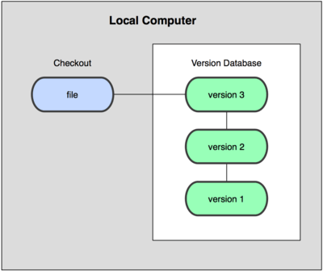

Versionamento
com Git e GitHub
O que é um sistema de controle de versão?
Por que eu deveria usar?
✔️ Reverter um arquivo ou projeto;
✔️ Comparar mudanças;
✔️ Saber quem foi responsável pelas alterações.
Tipos de sistem de controle de versão
Sistemas de Controle de Versão Locais
Sistemas de Controle de Versão Centralizados

Sistemas de Controle de Versão Distribuídos

Como surgiu o git?
Uma Breve História do Git
✔️ O kernel do Linux tem um escopo grande;
✔️ Mudanças no software eram repassadas como patches;
✔️ Em 2002, o projeto começou a usar um sistema DVCS proprietário;
✔️ Em 2005, o relacionamento entre a comunidade e a BitKeeper se desfez;
✔️ Isso levou a comunidade de desenvolvedores do Linux a desenvolver sua própria ferramenta.
Noções Básicas de Git
Snapshots, E Não Diferenças


Operações Locais

Git Tem Integridade
24b9da6552252987aa493b52f8696cd6d3b00373Você vai encontrar esses hashes em todo canto, uma vez que Git os utiliza tanto. Na verdade, tudo que o Git armazena é identificado não por nome do arquivo mas pelo valor do hash do seu conteúdo.
Os Três Estados

Instalando o git
No linux
Ferramenta de gerenciamento de pacotes:
$ apt-get install gitou
$ yum install git-coreNo mac
A mais fácil delas é usar o instalador gráfico do Git, que você pode baixar da página do SourceForge
No windows
Simplesmente baixe o arquivo .exe do instalador a partir da página e execute-o
Após concluir a instalação, você terá tanto uma versão command line (linha de comando, incluindo um cliente SSH que será útil depois) e uma GUI padrão.
Por fim... Configurações
Definindo nome de usuário:
git config --global user.name "John Doe"Definindo e-mail de usuário:
git config --global user.email johndoe@example.comVerificando suas configurações:
git config --listE o GitHub?
GitHub é uma plataforma de hospedagem de código-fonte com controle de versão usando o Git. Ele permite que programadores, utilitários ou qualquer usuário cadastrado na plataforma contribuam em projetos privados e/ou Open Source de qualquer lugar do mundo.
GitHub
Git na prática
Obtendo & Criando Projetos
| Comando | Descrição |
|---|---|
|
Inicializa um repositório Git local |
|
Cria uma cópia local de um repositório remoto |
Comandos básicos
| Comando | Descrição |
|---|---|
|
Verifica o status |
|
Adiciona um arquivo na staging area |
|
Consolida as alterações |
|
Remove um arquivo (ou pasta) |
|
Reseta o HEAD atual para o estado especificado |
Inspeção e Comparação
| Comando | Descrição |
|---|---|
|
Visualiza alterações |
|
Visualiza alterações antes de mesclar |
Branching & Merging
| Comando | Descrição |
|---|---|
|
Lista e cria branches |
|
Troca de branch |
|
Faz a fusão de duas branches |
|
Tira o estado sujo do seu diretório de trabalho |
Compartilhando e Atualizando Projetos
| Comando | Descrição |
|---|---|
|
Envia alterações para o repositório remoto |
|
Atualiza o repositório local para o commit mais recente |
|
Adiciona um repositório remoto |